CC9: La Entropía de Clausius
A partir del cociente $Q/T$ que se conserva en la máquina ideal de Carnot, Clausius define la entropía. Esta clase recorre los cuatro principios de la termodinámica, el experimento clásico del hielo que no se calienta mientras se funde, la relación entre entropía y desorden molecular, la energía libre, y la pregunta abierta sobre si la entropía define la flecha del tiempo.
Temas que cubre
- Los cuatro principios de la termodinámica: ley cero (la temperatura tiene sentido), primera ley (energía), segunda ley (entropía), tercera ley ($T=0$ es inalcanzable)
- Definición de Clausius: $\Delta S = Q/T$ a temperatura constante, ilustrada con el experimento del hielo fundiéndose a 273 K
- Por qué el hielo no se calienta mientras se está fundiendo, aunque esté en contacto con un fluido más caliente
- Relación entre entropía y desorden molecular: sólido (orden, baja $S$) → líquido → gas (mayor desorden, mayor $S$)
- La energía libre $F = E - TS$ como cantidad que el sistema minimiza en equilibrio
- La "muerte entrópica" del universo y el destino de los sistemas que alcanzan equilibrio total
- El debate abierto sobre si el crecimiento de la entropía define la dirección de la flecha del tiempo
Conceptos clave
Los cuatro principios
Curiosamente numerados fuera de orden histórico: el primero en descubrirse fue la segunda ley (entropía), seguido por la conservación de la energía (primera ley); más tarde se formalizaron la ley cero (que da sentido a la temperatura) y la tercera ley (la inalcanzabilidad de $T=0$, que requiere infinitos procesos sucesivos de enfriamiento).
El hielo que no se calienta
Mientras hay hielo y agua coexistiendo a 273 K, todo el calor que entra se usa para fundir el hielo (cambiar de fase), no para subir la temperatura. La entropía del agua que se forma aumenta en $Q/T$ aunque la temperatura permanezca fija — el ejemplo canónico de $\Delta S = Q/T$ a $T$ constante.
Entropía y desorden
Un sólido cristalino tiene las moléculas en una configuración geométrica que minimiza su energía potencial: baja entropía. Un líquido tiene moléculas caóticas, desordenadas y dispersas: mayor entropía y, además, mayor energía potencial total. El aumento de entropía del universo se traduce, a escala molecular, en aumento de desorden.
Energía libre y equilibrio
No es sólo la entropía la que se maximiza: cada partícula de materia "busca" minimizar su energía libre $F = E - TS$. Minimizar $F$ a $T$ fija equivale exactamente a maximizar la entropía total del universo (sistema + entorno), porque ceder energía al entorno aumenta la entropía de éste más de lo que disminuye la del sistema, si la cesión ocurre a temperatura suficientemente alta.
Fórmulas fundamentales

Qué hay que entender
- La entropía de Clausius nace directamente del resultado de Carnot: en el ciclo ideal $Q_y/T_y = Q_0/T_0$, es decir, el cociente calor/temperatura es una cantidad conservada. Clausius generaliza esto a una función de estado $S$ con $dS = \bar\delta Q/T$.
- El experimento del hielo es importante porque muestra que la temperatura no siempre aumenta cuando entra calor: durante un cambio de fase, el calor latente se invierte en reorganizar la estructura molecular (aumentando $S$), no en agitación térmica adicional.
- "Equilibrio termodinámico" no significa ausencia de movimiento — significa que toda la energía disponible se ha distribuido entre los grados de libertad microscópicos de manera estadísticamente estable. Por eso el equilibrio es el estado de máxima entropía, no de mínima energía cinética.
- La "muerte entrópica" del universo es la extrapolación de que, si la entropía del universo crece sin límite, eventualmente todo alcanzará una misma temperatura y ninguna máquina (incluida la vida misma, que depende de flujos de calor) podrá funcionar.
- La pregunta de si la entropía "define" la flecha del tiempo sigue abierta: a nivel microscópico las leyes de la física son reversibles en el tiempo (no se distingue una colisión de partículas filmada hacia adelante o hacia atrás), pero a escala macroscópica el crecimiento de la entropía da una dirección clara y observable al paso del tiempo.